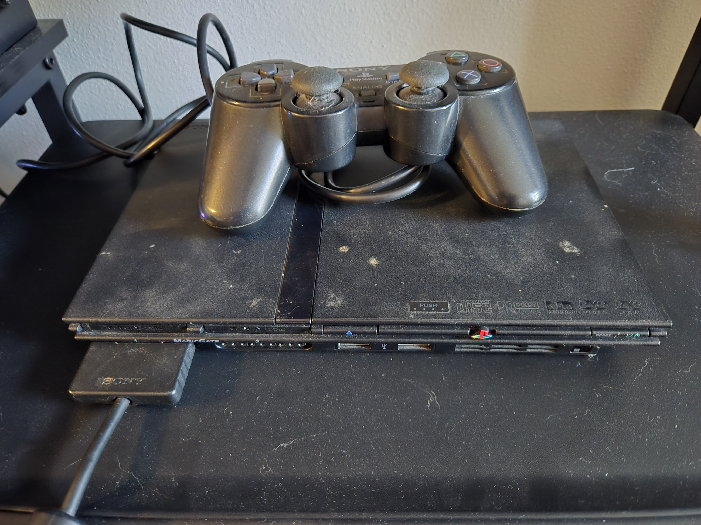
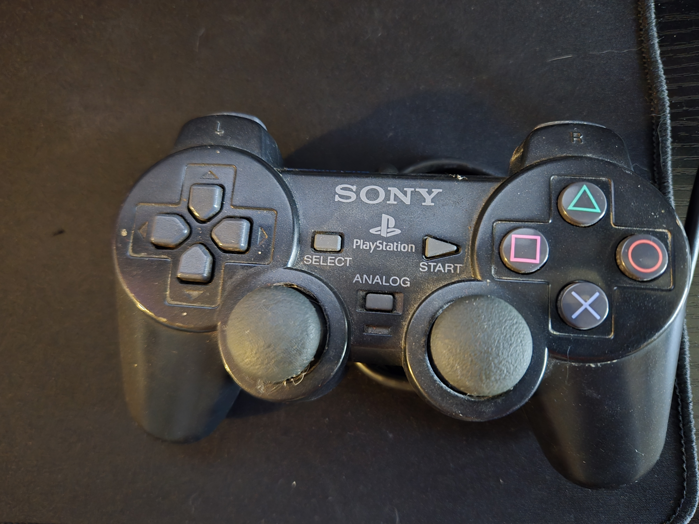

The Playstation 2 was the 1 of the 4 six generation video game console. Sony had to compete with the Nintendo's GameCube, Microsoft's Xbox, and Sega's Dreamcast. With a lot of competition Sony had to devlope games that could be engage with the competition. This made the Playstation 2 one of the best selling video game consoles of all time. With a console like that there are amazing video games to play.
 This is a list of 4 games to try on the Playstation 2
Sony's Official Playstation website